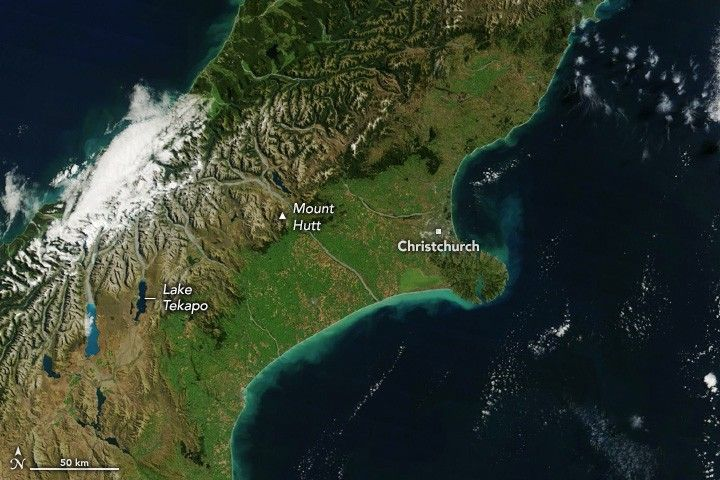

Late-Autumn Storm Lashes New Zealand
Severe weather battered New Zealand’s east coast in late April and early May, bringing damaging winds and heavy rain to low-lying areas and late-autumn snowfall to the mountains. A state of emergency was declared for parts of the South Island, including its largest city, Christchurch, after a low-pressure system caused flooding, landslides, power outages, and travel disruptions, according to news reports.
The image above (right) shows the central portion of New Zealand’s South Island on May 5, several days after the storm moved through. Higher elevations are blanketed in snow, and coastal waters are brightened by suspended sediment, likely from a combination of river discharge and material stirred up from the seafloor. In comparison, the mountains are mostly snow-free and coastal waters are clearer in an image from March 6 (left). Both were acquired with the MODIS (Moderate Resolution Imaging Spectroradiometer) on NASA’s Terra satellite.
Ground stations recorded 52.4 millimeters (2.1 inches) of rainfall in Christchurch on April 30, followed by 62.4 millimeters (2.5 inches) on May 1, according to New Zealand’s MetService. Both days exceeded the average monthly rain totals for their respective months, and even higher totals were reported elsewhere in the region. Some Christchurch residents evacuated as rivers rose and water inundated homes, submerged roads, and triggered landslides, The New Zealand Herald reported.
Snowfall was significant in some mountainous regions. The Mount Hutt ski area west of Christchurch saw estimated accumulations of up to 1.2 meters (4 feet) from the storm. Over 10 centimeters (4 inches) fell along the shore of Lake Tekapo, according to news reports, and ski areas farther south received a dusting.
Strong southerly winds amplified the storm’s effects on the North Island, with speeds exceeding 150 kilometers (93 miles) per hour in Wellington. The gales ripped roofs off homes, caused power outages, and led to canceled flights in and out of the city on May 1. Meteorologists warned of coastal flooding at high tide due to strong swells.